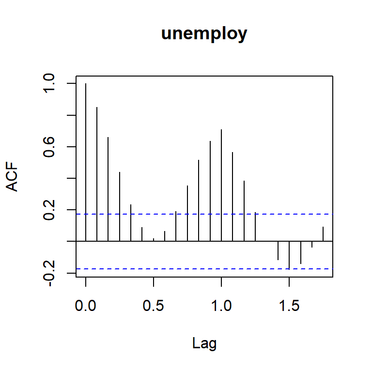

R: Time Series
36-350 – Statistical Computing
Week 10 – Spring 2022
The Setting
Assume that you have a dataset comprised of some response variable (e.g., counts) as a function of evenly spaced, discrete times \(t_i\). (For example, you saw 10 events in January, then 7 in February, etc.) In this set of notes, we will provide basic functions for visualizing such data and for processing them so as to estimate the correlation between the data in successive bins.
(Note that we will not discuss how to model such data, just how to perform basic, initial processing.)
ts Class: Time Series
The first step is to convert our timing data, which here will be input into a data frame from a file, into an instance of the ts class.
dat = read.table(url("http://www.stat.cmu.edu/~mfarag/350/Maine.dat"),header=TRUE)
head(dat,3)
## unemploy
## 1 6.7
## 2 6.7
## 3 6.4
The data contain no information about the starting date, so you need to provide that information yourself:
maine.ts = ts(dat,start=c(1996,1),frequency=12)
print(maine.ts)
## Jan Feb Mar Apr May Jun Jul Aug Sep Oct Nov Dec
## 1996 6.7 6.7 6.4 5.9 5.2 4.8 4.8 4.0 4.2 4.4 5.0 5.0
## 1997 6.4 6.5 6.3 5.9 4.9 4.8 4.5 4.0 4.1 4.3 4.8 5.0
## 1998 6.2 5.7 5.6 4.6 4.0 4.2 4.1 3.6 3.7 4.1 4.3 4.0
## 1999 4.9 5.0 4.6 4.3 3.9 4.0 3.6 3.3 3.1 3.3 3.7 3.7
## 2000 4.4 4.4 4.1 3.5 3.1 3.0 2.8 2.5 2.6 2.8 3.1 3.0
## 2001 3.9 4.2 4.0 4.1 3.5 3.5 3.4 3.1 3.4 3.7 4.0 4.0
## 2002 5.0 4.9 5.0 4.7 4.0 4.2 4.0 3.6 3.7 3.9 4.5 4.6
## 2003 5.6 5.8 5.6 5.5 4.8 4.9 4.8 4.3 4.5 4.6 4.8 4.7
## 2004 5.6 5.6 5.5 4.8 4.2 4.3 4.2 3.8 4.0 4.2 4.6 4.6
## 2005 5.5 5.8 5.5 5.2 4.7 4.6 4.5 4.1 4.4 4.4 4.8 4.6
## 2006 5.3 5.6 4.9 4.6 4.2 4.4 4.4 3.9
As you might be able to tell, there are underlying assumptions regarding time-series. frequency is assumed to be the number of observations in a given year: if 12, the data are displayed by month; if 4, by quarter; etc.
ts: Plotting
One can easily plot a ts object:
The generic plot function detects that maine.ts is a ts-class object, and shunts maine.ts to plot.ts(), which knows how to construct a plot for time-series data.
ts: aggregate()
To smooth the data to look for underlying trends, you can use aggregate() (or more specifically, aggregate.ts()):
maine.ts.annual = aggregate(maine.ts)/12 # average annual unemployment
plot(maine.ts.annual)
Note how the function by default knew to aggregate the data over one-year periods. If we wanted to look at the average unemployment for, e.g., every six months, we could apply the nfrequency argument:
maine.ts.6month = aggregate(maine.ts,nfrequency=2)/6
plot(maine.ts.6month)

ts: window()
ts-class objects are not data frames. So even if it appears like it should be straightforward to, e.g., extract the column of data showing unemployment every March, it is not: you need to apply the window() function:
window(maine.ts,start=c(1996,3),freq=TRUE) # compare output with full print-out above
## Time Series:
## Start = 1996.167
## End = 2006.167
## Frequency = 1
## unemploy
## [1,] 6.4
## [2,] 6.3
## [3,] 5.6
## [4,] 4.6
## [5,] 4.1
## [6,] 4.0
## [7,] 5.0
## [8,] 5.6
## [9,] 5.5
## [10,] 5.5
## [11,] 4.9
ts: decompose()
A common assumption about a time series is that it can be additively decomposed, i.e., we can assume that \[
x_t = m_t + s_t + z_t \,,
\] where \(m_t\) is an underlying smooth trend, \(s_t\) is a seasonal component with period one year, and \(z_t\) is the residual random variation. Generally, in time-series analyses, we are interested in modeling \(z_t\) after the more deterministic components \(m_t\) and \(s_t\) have been removed from the data.
We will not discuss how decomposition is done here; that’s beyond the scope of these notes. We will just show an example:
plot(decompose(maine.ts))
The plot at bottom shows \(z_t\), which we can view as a sequence of potentially correlated random variables. (Note that because decomposition involves smoothing of the data, the first few months and the last few months of \(z_t\) data are meaningless.) Modeling the level of correlation is also beyond the scope of these notes: usual approaches include random walks (i.e., Markov processes), autoregressive (AR) models, etc. What is not beyond the scope of these notes, however, is estimating the correlation structure in \(z_t\).
Autocorrelation
Before we show the autocorrelation of our dataset, let’s get some definitions squared away.
- Stationary: a population quantity is stationary (or exhibits stationarity) if it does not change as a function of time. If a time series is second-order stationary, then the population mean \(\mu\), the population variance \(\sigma\), and the population autocorrelation \(\rho_k\) are assumed constant as a function of \(t\).
- Lag: denoted by \(k\), it is the number of periods between observations. If, e.g., \(k = 1\), then for the
maine.ts data in particular we are looking at the correlation between one observation and one 12 months in the future, since frequency=12. (\(k\) need not be integer! For instance, a lag of \(k = 1/12\) denotes a lag of one month, i.e., the lag between one bin and the next.)
- Autocovariance: this is a covariance function (denoted the acvf) defined for a lag \(k\): \[
\gamma_k = E[(x_t-\mu)(x_{t+k}-\mu)] \,.
\]
- Autocorrelation: this is the correlation function (denoted the acf) defined for a lag \(k\): \[
\rho_k = \frac{\gamma_k}{\sigma^2} \,.
\] By definition, \(\rho_0 = 1\), since \(\gamma_0 = V[x_t] = \sigma^2\).
Autocorrelation
a = acf(maine.ts)
names(a)
## [1] "acf" "type" "n.used" "lag" "series" "snames"

random.comp = decompose(maine.ts)$random
random.comp = random.comp[!is.na(random.comp)]
a = acf(random.comp) # plot - not as ts object -- lag maps to bins -> lag 1 == 1 month

The plot is dubbed a correlogram and the blue dashed lines are drawn at autocorrelation values of \((-1/n) \pm (2/\sqrt{n})\). Values that lie outside the lines are assumed “significant”: we reject the null hypothesis that the true value of the \(\rho_k\) is zero. (The estimator is biased, hence the \(-1/n\) in the definition of the blue dashed lines.) Here, it appears that the random data \(z_t\) are positively correlated over time-scales of a few months and of approximately one year. If you are satisfied with this as an analyst, then your next step is modeling this structure.
Interpreting a correlogram is an art. Here, we might be leery, since a gradual decline in \(\rho_k\) can indicate a sub-optimally modeled trend (\(m_t\)) and a peak at lag 1 can indicate sub-optimally modeled seasonality (\(s_t\)). There are no easy answers here!